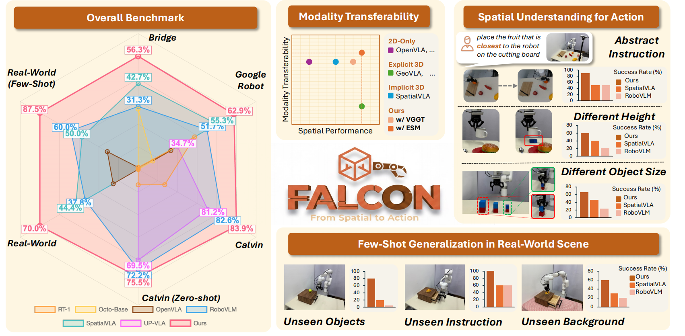
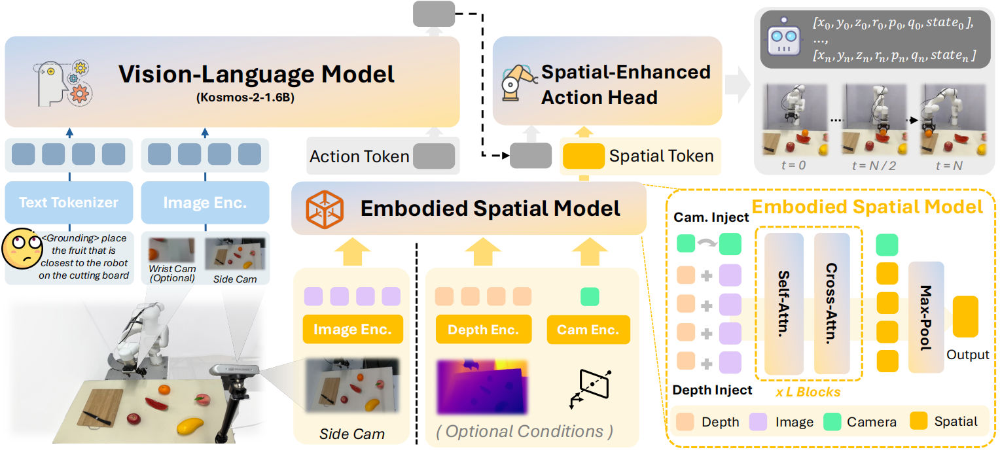
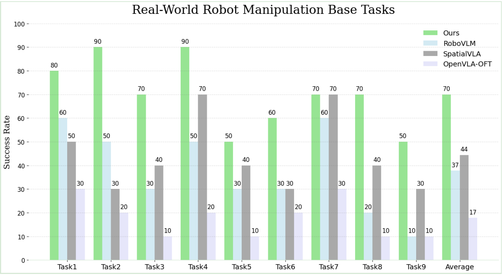
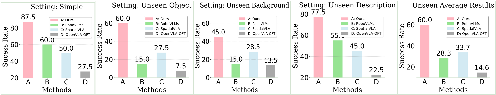
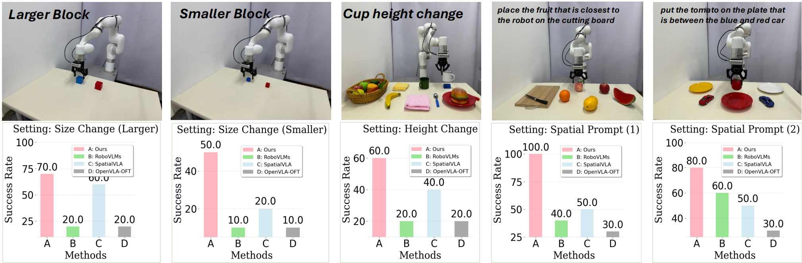

Overview

We propose FALCON, a vision-language-action model that achieves robust 3D spatial understanding by effectively integrating spatially rich tokens and sematic features. FALCON demonstrates notable modality transferability by performing robustly with both RGB-only and multi-modal inputs, superior spatial understanding in tasks involving unseen object sizes, heights and abstract spatial instructions, and strong few-shot generalizability in real-world scenes. The model achieves state-of-the-art performance across a diverse range of benchmark evaluations.
Framework

Overview of FALCON framework. FALCON integrates a 2D VLM (e.g., Kosmos-2), an Embodied Spatial Model, and a Spatial-Enhanced Action Head. At timestep \(t\), the VLM processes visual observations \(O_t\) and language instructions \(L\) to produce a semantic action token \(\hat{\mathbf{t}}_{\text{act}}\). Concurrently, the Embodied Spatial Model encodes a third-view image \(I^{\text{3rd}}_t\) and optional geometric inputs into spatial tokens \(\mathbf{T}_{\text{spl}}\). These are fused by the Spatial-Enhanced Action Head to generate precise robot actions \(A_t\), enabling robust manipulation through joint semantic and spatial reasoning.
Experiment
For simulation, we evaluate FALCON on the widely used benchmarks CALVIN and SimplerEnv. For real-world tasks, we design settings that span from simple interactions (e.g., lifting a yellow pepper) to long-horizon, spatially demanding activities (e.g., placing a red coke can on the bottom shelf), thereby thoroughly testing robustness and spatial reasoning. We also conduct a thorough ablation study on CALVIN benchmark to validate key design choices in FALCON, including spatial token injection strategies and fusion mechanisms.
Base Tasks in Real-World
Base Tasks contains a total of nine distinct task suites, encompassing language grounding (cluttered scenes with random distractors) and semantic understanding (unseen object poses). As demonstrated below, FALCON achieves the highest average success rate of 70.0% across all nine task suites, outperforming the advanced method SpatialVLA (44.4%) by 25.6%.

#1 lift the yellow pepper
#2 pick banana and place on red plate
#3 put carrot in the basket
#4 put white cup on pink cloth
#5 stack blue block on red block
#6 open drawer and place bread
#7 close the drawer
#8 place the red coke can on the bottom shelf
#9 place the green sprite can on the top shelf
Few-shot Adaptation
Few-shot Adaptation includes four challenging tasks selected from Base Tasks that require more spatial perception capabilities. For each task, we collected 20 demonstration trajectories. In addition to the base setting (denoted as Simple below), we introduce three unseen variations: Unseen Object, Unseen Background (by changing two different colored tablecloths), and Unseen Task Description, to evaluate the robustness and generalization of all models in low-data regimes. As shown below, FALCON achieves the highest performance across all settings, significantly outperforming the second-best model by 27.5% in Simple and 27% in Unseen Average.

Unseen Object
stack orange block on green block
open drawer and place tennis ball
place the strawberry juice can on the bottom shelf
place the grape juice can on the top shelf
Unseen Background
stack blue block on red block
open drawer and place bread
place the red coke can on the bottom shelf
place the green sprite can on the top shelf
Unseen Task Description
put the blue cube on top of the red cube
unlock the drawer and put the bread inside
put the red coke can on the lower shelf
position the green sprite can on the upper shelf
Spatial Understanding Capability Evaluations
Spatial Understanding Capability Evaluations consist of four tasks with varying levels of spatial complexity: two spatial-prompt tasks adapted via efficient fine-tuning, two zero-shot tasks, one from Base Tasks involving explicit height variation ("put white cup on pink cloth" with two 3cm blocks below cup), and the other from Few-shot Adaptation featuring objects of different sizes ("stack blue block on red block" with larger and smaller block size). This suite of tasks is designed to further investigate the spatial perception capabilities of FALCON. As illustrated below, FALCON demonstrates superior spatial understanding, outperforming all existing policies across the evaluated tasks.

Fine-tune Tasks
"Place the fruit that is closest to the robot on the cutting board"
FALCON (ours) ✅
RoboVLM ❌
SpatialVLA ✅
FALCON (ours) ✅
RoboVLM ❌
SpatialVLA ❌
FALCON (ours) ✅
RoboVLM ❌
SpatialVLA ❌
"Put the tomato on the plate that is between the blue and red car"
FALCON (ours) ✅
RoboVLM ⚠️
SpatialVLA ✅
FALCON (ours) ✅
RoboVLM ✅
SpatialVLA ❌
FALCON (ours) ✅
RoboVLM ⚠️
SpatialVLA ✅
Zero-shot Tasks
"Stack blue block on red block"
Regular Size
FALCON (ours) ✅
RoboVLM ✅
SpatialVLA ✅
Larger Size
FALCON (ours) ✅
RoboVLM ⚠️
SpatialVLA ❌ (crashed on table)
Smaller Size
FALCON (ours) ✅
RoboVLM ⚠️
SpatialVLA ⚠️
"Put white cup on pink cloth"
Real-world experiments validate that incorporating depth and camera poses significantly enhances robustness of FALCON, increasing task success rates from 60% to 80% in scenarios involving objects of varying heights. These findings highlight FALCON's effective utilization of additional geometric information and its adaptability across different sensory modalities.
FALCON w/ 3D (ours) ✅
FALCON (ours) ✅
RoboVLM ❌
SpatialVLA ❌
FALCON w/ 3D (ours) ✅
FALCON (ours) ✅
RoboVLM ❌
SpatialVLA ❌
FALCON w/ 3D (ours) ✅
FALCON (ours) ⚠️
RoboVLM ❌
SpatialVLA ✅
Note: The above real-world experiment videos are all 3x speed.
Citation
@article{zhang2025spatial,
title={From Spatial to Actions: Grounding Vision-Language-Action Model in Spatial Foundation Priors},
author={Zhang, Zhengshen and Li, Hao and Dai, Yalun and Zhu, Zhengbang and Zhou, Lei and Liu, Chenchen and Wang, Dong and Tay, Francis EH and Chen, Sijin and Liu, Ziwei and others},
journal={arXiv preprint arXiv:2510.17439},
year={2025}
}